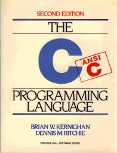
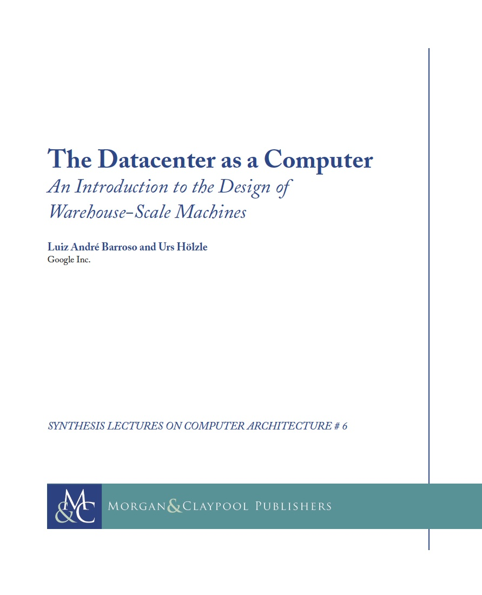
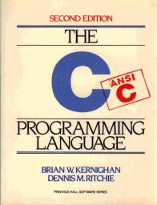
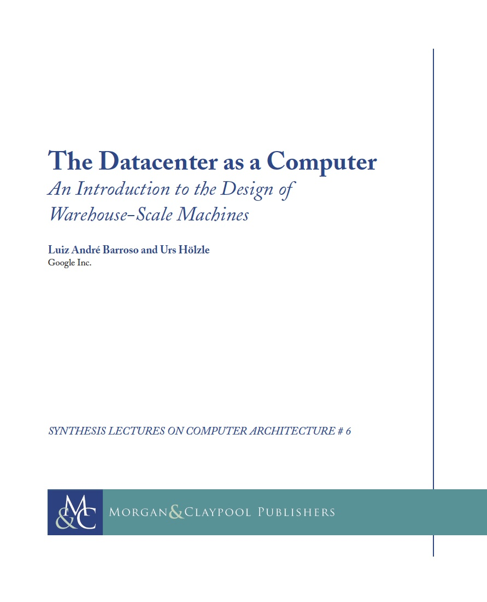

| Wk |
Date |
Lecture Topic |
Reading |
Section |
Lab |
Assignment Due
|
1
|
01/20 Tu |
Intro, Number Representation |
(4th) P&H: 2.4
(5th) P&H: 2.4
Binary slides
|
Section 0: Number Representation
|
Lab 0: Intro, git, Number Rep
|
HW0: Intro and Number Representation
Due 02/01 @ 23:59:59
|
| 01/22 Th |
C Intro, Pointers |
B. Harvey's Intro to C
K&R Ch. 1-5
|
2
|
01/27 Tu |
C Arrays, Strings, Pointers |
K&R Ch. 5-6
C Reference Slides |
Section 1: C Basics
|
Lab 1: C and GDB
|
| 01/29 Th |
C Memory Mangement, Usage |
K&R: 7.8.5, 8.7 |
3
|
02/03 Tu |
Intro to Assembly Language, MIPS Intro |
(4th) P&H: 2.1-2.3
(5th) P&H: 2.1-2.3
|
Section 2: C Memory Management and MIPS Intro
|
Lab 2: Advanced C, Memory Management
|
HW1: C (Build git Part I)
Due 02/08 @ 23:59:59
|
| 02/05 Th |
MIPS, MIPS Functions |
(4th) P&H: 2.6 - 2.9, 2.10 (only p.128-129), B.6
(5th) P&H: 2.6 - 2.9, 2.10 (only p.111-113), A.6
|
4
|
02/10 Tu |
MIPS Instruction Formats |
(4th) P&H: 2.5, 2.10
(5th) P&H: 2.5, 2.10
|
Section 3: MIPS II / Instruction Formats
|
Lab 3: MIPS Assembly
|
HW2: Advanced C (Build git Part II)
Due 02/15 @ 23:59:59
|
| 02/12 Th |
Compiler, Assembler, Linker, Loader (CALL) |
(4th) P&H: 2.12, B.1-B.4
(5th) P&H: 2.12, A.1-A.4
|
5
|
02/17 Tu |
Intro to Synchronous Digital Systems (SDS), Logic |
SDS Handout
Logic Handout
(4th) P&H: C.2-C.3 (on CD)
(5th) P&H: B.2-B.3
|
Section 4: MIPS Procedures / CALL
|
Lab 4: MIPS Functions, Pointers
|
Project 1, Part 1: C and MIPS
Due 03/01 @ 23:59:59
HW3: C to MIPS Practice Problems
Ungraded (Solution)
|
| 02/19 Th |
Functional Units, FSMs |
Blocks Handout
(4th) P&H: 4.2, C.3-C.6 (on CD)
(5th) P&H: 4.2, B.3-B.6
State Handout
|
6
|
02/24 Tu |
MIPS Datapath, Single-Cycle Control Intro |
(4th) P&H: 4.1, 4.3, 4.4
(5th) P&H: 4.1, 4.3, 4.4
|
Section 5: Logic and SDS
|
Lab 5: Logisim
|
Project 1, Part 2: MIPS
Due 03/07 @ 23:59:59 (a Saturday!)
|
| 02/26 Th |
Midterm I (Covers up to and including week 4 lectures, in-class) |
7
|
03/03 Tu |
MIPS Single-Cycle Control, Pipelining Intro |
(4th) P&H: 4.5-4.8
(5th) P&H: 4.5-4.8
|
Section 6: Single-Cycle Datapath
|
Lab 6: More Logisim, ALU Design
|
HW4: Logic, FSMs
Due 03/10 @ 23:59:59 (a Tuesday!)
Solutions
|
| 03/05 Th |
MIPS Pipelining Hazards |
(4th) P&H: 4.10, 4.11
(5th) P&H: 4.10, 4.11
|
8
|
03/10 Tu |
Memory Hierarchy, Fully Associative Caches |
(4th) P&H: 5.1, 5.2 (p. 457-470), 5.3, 5.5, 1.4
(5th) P&H: 5.1, 5.2, 5.3, 5.4, 5.8, 1.6
Cache Flowchart
|
Section 7: Pipelining
|
Lab 7: CPU Project Prep
|
Project 2, Part 1: ALU and Regfile
Due 03/15 @ 23:59:59
|
| 03/12 Th |
Caches: Direct-mapped, Set-associative, Performance |
See 3/10 lec |
| 03/14 Sat |
Guerrilla Section #1 (Worksheet, Solutions) |
9
|
03/17 Tu |
Multilevel Caches, Cache Questions |
See 3/10 lec |
Section 8: Caches
|
Lab 8: Caches
|
Project 2, Part 2: CPU
Due 03/24 @ 23:59:59
|
| 03/19 Th |
Performance, Floating Point, Tech Trends |
(4th) P&H: 3.5, 3.8
(5th) P&H: 3.5. 3.9
IEEE 754 Simulator
|
10
|
03/24 Tu |
Administrative Holiday (Spring Break) |
| 03/26 Th |
Administrative Holiday (Spring Break) |
11
|
03/31 Tu |
Flynn Taxonomy, Data-Level Parallelism |
(4th) P&H: 1.5, 1.6, 7.1, 7.2, 7.4, 7.6
(5th) P&H: 1.7, 1.8, 6.1, 6.2, 6.3, 6.7
|
Section 9: Floating Point, AMAT, Flynn Taxonomy
|
Lab 9: SIMD Instructions
|
HW5: Caches/Floating-Point
Due 04/05 @ 23:59:59
Solutions
|
| 04/02 Th |
Amdahl's Law, Thread-Level Parallelism, OpenMP Intro |
(4th) P&H: 7.3, 5.8, 2.11
(5th) P&H: 6.5, 5.10, 2.11
OpenMP Summary Card |
| 04/04 Sat |
Midterm II Review Session (Problems, Solutions) |
12
|
04/05 Sun |
Guerrilla Section #2 (Worksheet, Solutions) |
Section 10: Cache Coherence, Synchronization
|
Lab 10: Thread-Level Parallelism, OpenMP
|
None
|
| 04/07 Tu |
Cache Coherence, OpenMP Sharing Issues, Performance |
(4th) P&H: 5.8
(5th) P&H: 5.10 |
| 04/09 Th |
Midterm II (Covers up to and including 3/31 lecture, in-class) |
13
|
04/14 Tu |
Warehouse Scale Computing, MapReduce (Spark) |
The Datacenter as a Computer: Ch 1, Ch 2.4, Ch 3, 5.1-5.3
|
Section 11: Spark and Warehouse Scale Computing
|
Lab 11: MapReduce and Spark
|
Project 3: Performance Programming
Due 04/19 @ 23:59:59
|
| 04/16 Th |
OS Support, Base and Bounds, Interrupts, Virtual Memory Intro |
(4th) P&H: 5.10-5.12
(5th) P&H: 5.13, 5.15, 5.16 |
14
|
04/21 Tu |
More Virtual Memory, Intro to I/O |
(4th) P&H: 6.6, 4.9
(5th) P&H: 6.9 (only p.4-10), 4.9 |
Section 12: Virtual Memory and I/O
|
Lab 12: Virtual Memory
|
Project 4: Intro
Project 4, Part 1: Spark
Due 04/29 @ 23:59:59
|
| 04/23 Th |
I/O: DMA, Disks, Networking |
(4th) P&H: 6.2-6.4, 6.9
(5th) 5.2, 5.5, 5.11 |
15
|
04/28 Tu |
Dependability: Parity, ECC, RAID |
(4th) P&H: 6.2, C-65 to C-67
(5th) P&H: 5.5, B-65 to B-67
Berkeley RAID Paper |
Section 13: Parity, ECC, RAID
|
None
|
Project 4, Part 2: Spark on EC2
Due 05/03 @ 23:59:59
HW6: Virtual Memory
Due 05/03 @ 23:59:59
Solutions
|
| 04/30 Th |
Summary, What's Next? |
None |
RRR
|
05/06 W |
Final Exam Review: 2-5pm, 105 Stanley |
| 05/07 Th |
Guerrilla Section #3 (Worksheet,
Solutions) |
Finals
|
05/15 F |
Final Exam: 7:00pm-10:00pm, Location TBD
|
 
{kind=link}
{kind=link}
{kind=link}